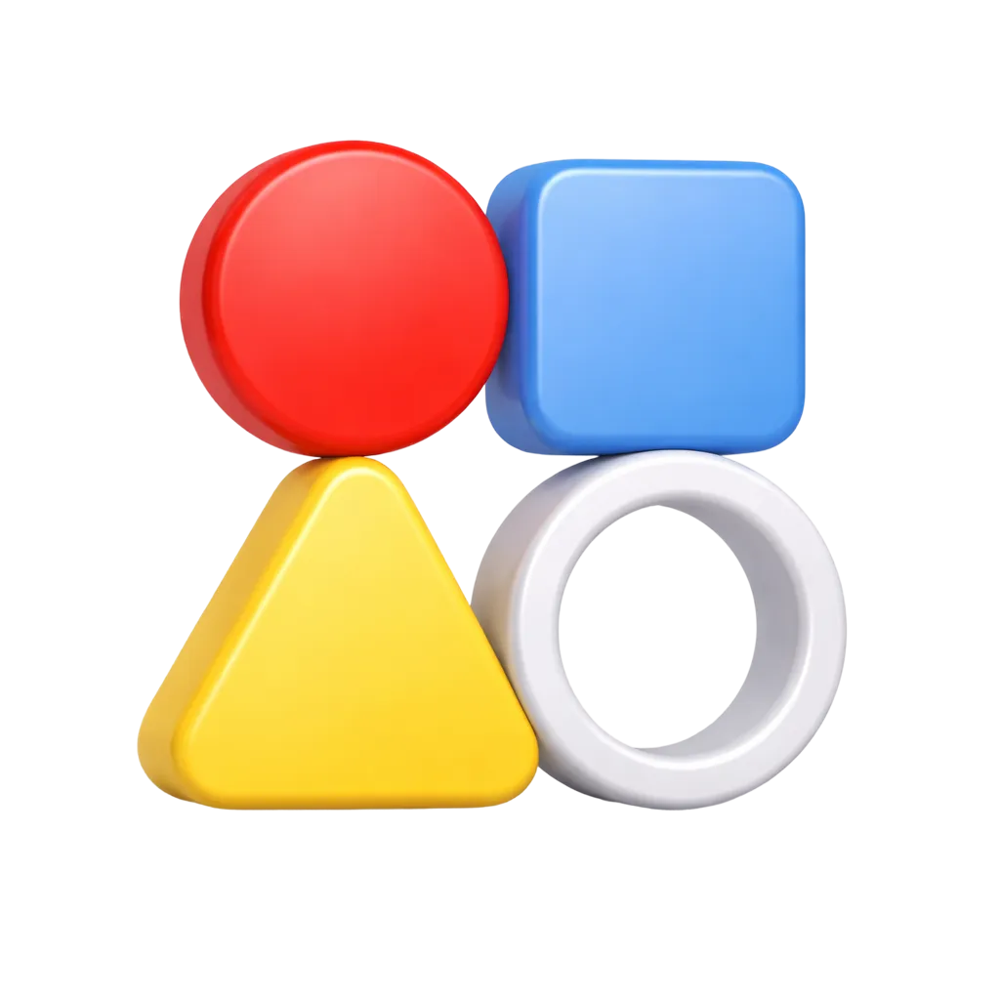

관리자
관리자
워크스페이스 01
전략기획팀 워크스페이스입니다.
 김
임
김
임
솔루션 설계 관리에서
지연된 작업 3건이 있어요
관리자
전략기획팀 워크스페이스입니다.
김
임
참여자
전략기획팀 워크스페이스입니다.
김
박

관리자
연구소 협업공간입니다.
김
오
관리자
사회 8차 공동개소 준비 업무 공유 공간입니다.
김
윤

기획팀 업무 관리를 위한
보드입니다.
전략문서 설계를 관리하는
협업 보드입니다.
전략문서 설계를 관리하는
협업 보드입니다.
전략, 설계, 디자인, 개발팀 업무 공간입니다.
김
김나온
박
+3
5명
전략 문서 설계를 관리하는
작업 보드입니다.
화면 검증과 피드백을
정리하는 보드입니다.
솔루션 구조와 정책 설계를
추적하는 보드입니다.
| ID | 제목 | 담당자 | 단계 | 상태 | 우선순위 | 시작일 | 완료일 | 등록자 | 수정일 | 등록일 | |
|---|---|---|---|---|---|---|---|---|---|---|---|
| plan-1001 | 김김지은 | 2025-07-12 | 2025-07-01 | ||||||||
| plan-1002 | 박박정훈 | 2025-07-12 | 2025-07-02 | ||||||||
| plan-1003 | 윤윤대현 | 2025-07-12 | 2025-07-03 | ||||||||
| plan-1008 |  |
박박정훈 | 2025-07-12 | 2025-07-06 | |||||||
| plan-1010 | |
박박정훈 | 2025-07-12 | 2025-07-08 | |||||||
| plan-1004 | 김김지은 | 2025-07-12 | 2025-07-09 | ||||||||
| plan-1005 | 조조민지 | 2025-07-12 | 2025-07-10 | ||||||||
| + 작업 등록 | |||||||||||
 홍길동 대리(솔루션기획팀)
홍길동 대리(솔루션기획팀)모바일 환경에서 전자결재 기능 사용 시 불편함을 호소하는 사용자가 증가하고 있습니다. 주요 이슈로는 결재 버튼 위치 혼란, 도장 확인 영역 협소, 터치 반응 속도 저하, 확대/축소 미지원 등이 있습니다. 이러한 문제를 해결하기 위해 조직의 피드백을 바탕으로 구체적인 기능 요구사항과 화면 흐름 변경안을 문서화할 필요가 있습니다.
홍길동 대리(솔루션기획팀)현재 운영 중인 프로젝트, 스페이스, 태스크보드 기능을 하나의 협업 모듈로 통합하기 위한 구조 설계 작업입니다. 워크스페이스, 폴더, 보드, 작업, 하위작업으로 구성된 계층 구조를 기준으로, 각 단위의 기능 요구사항과 화면 흐름 변경안을 문서화할 필요가 있습니다.